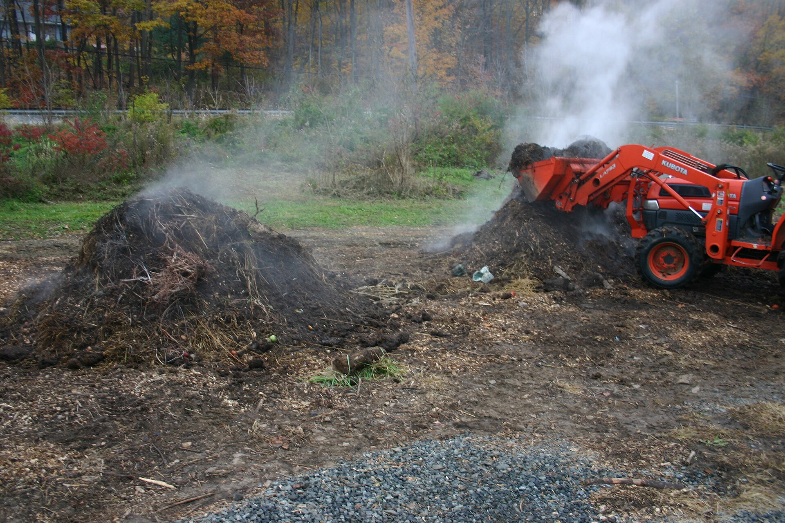
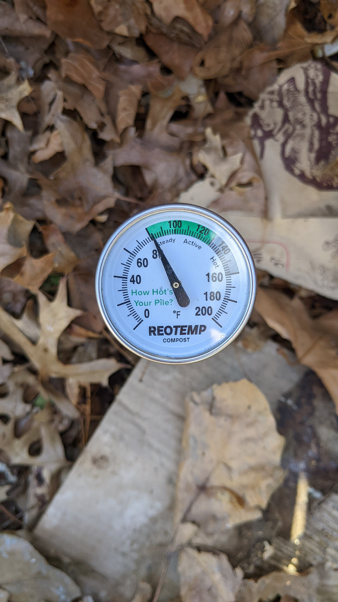
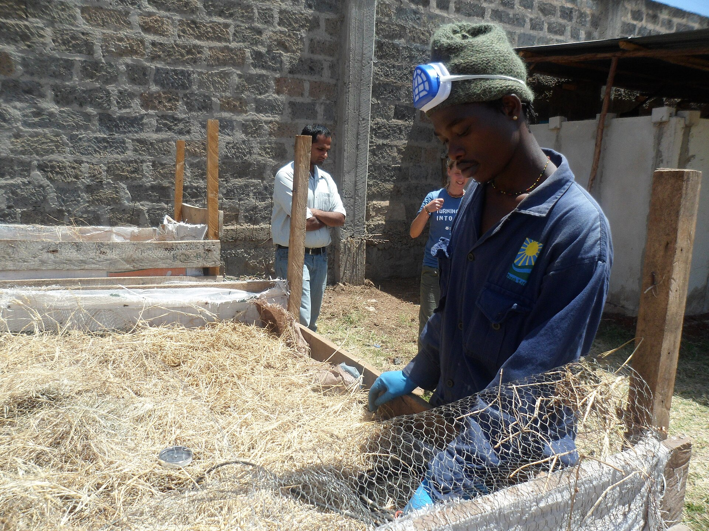
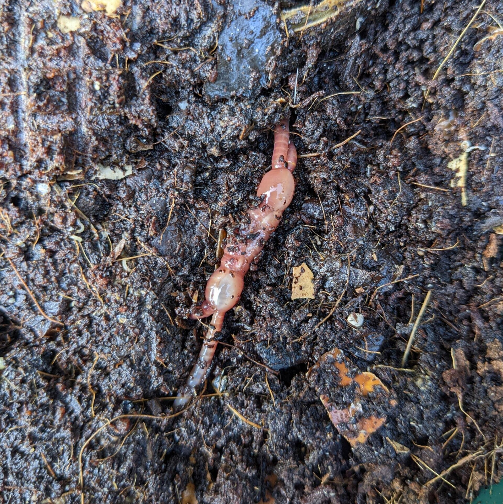
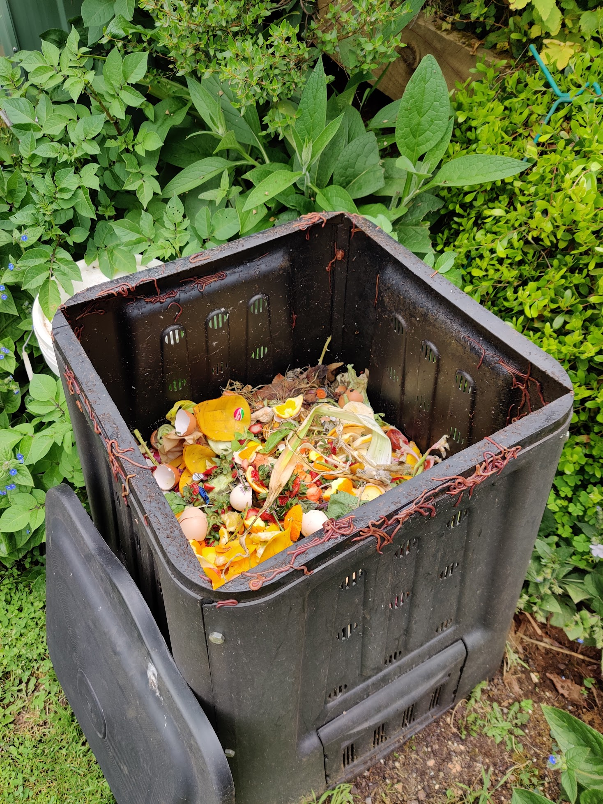
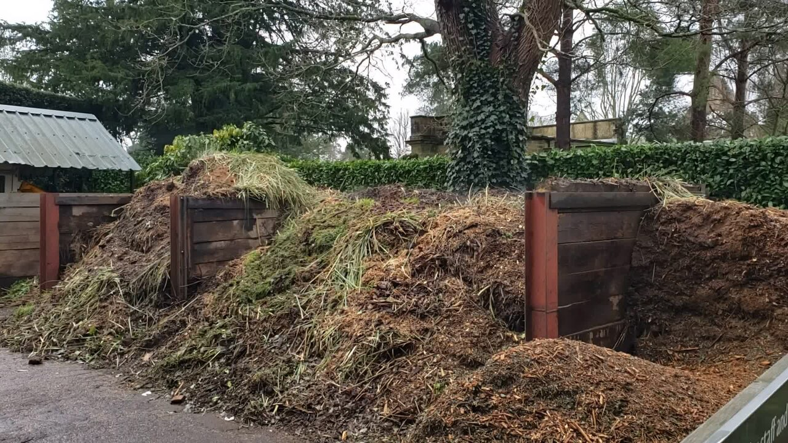
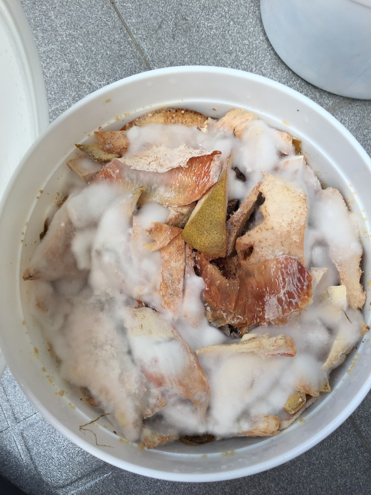
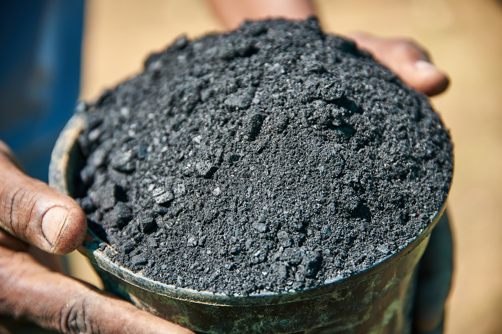
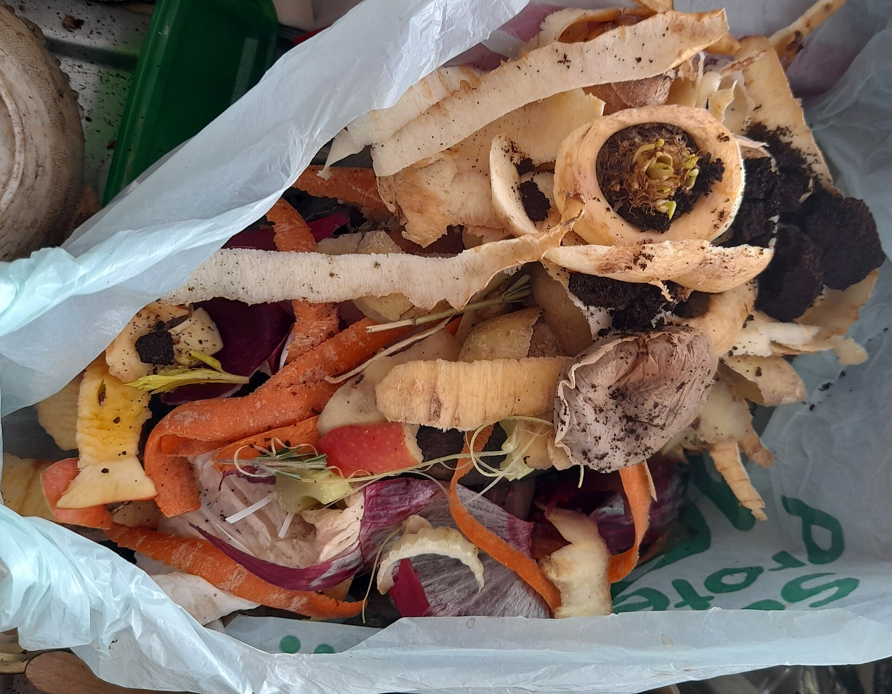

Photo credits
Every image on this site is free to use commercially. We use three license families, all hosted on Wikimedia Commons: CC0 (public domain, no conditions), CC BY (attribution required), and CC BY-SA (attribution plus share-alike). Wherever a photo appears, its caption carries the creator's name and license. This page is the full record.
How we use each license
- CC0 — the creator waived all rights. No attribution is required; we credit the creator anyway, because the work is worth it.
- CC BY — attribution is required. Each photo is credited in its on-page caption and in the table below.
- CC BY-SA — attribution plus share-alike. We credit as above. Resized versions of these images are made available under the same CC BY-SA license as the original.
Every image on this site
| Image | Work | Creator | License | Used on |
|---|---|---|---|---|
 |
Flipping hot compost pile 811 | SB Johnny | CC BY-SA 3.0 | Home (stage) |
| Compost tumbler in Brighthelm Garden 2023-06-24 | Andy Li | CC0 | Shop, Compost Bins, Credits (stages) | |
 |
Four compost bins | Hu Nhu | CC0 | Home, Compost Bins, Privacy |
 |
Compost thermometer | UnifiedFunctionality | CC BY-SA 4.0 | Thermometer Showdown (stage) |
 |
Measuring temperature in compost pile (covered with straw) | SuSanA Secretariat | CC BY 2.0 | About (stage) |
 |
Little worm baby red wiggler | Zenyrgarden | CC BY-SA 4.0 | Introduction to Compost Culture (stage) |
 |
Redwiggler-copulation-compost | Fubar Obfusco | CC BY-SA 4.0 | Microbial Succession, 404 (stages) |
 |
Worm compost bin | FotoFree | CC BY-SA 4.0 | Worm Bins (stage) |
 |
Steaming compost in Nymans Garden (video + poster frame) | Andy Li | CC0 | Home, Hot vs Cold vs Bokashi |
 |
Bokashi composting bucket content | Zenyrgarden | CC BY-SA 4.0 | Bokashi Buckets (stage) |
 |
Charged and inoculated biochar ready for soil application | Tim Brunauer (GIZ) | CC BY-SA 4.0 | Biochar (stage) |
 |
Kitchen food waste, vegetable peelings & coffee grounds in biodegradable bag | Tek monde | CC BY-SA 4.0 | Countertop Composters (stage) |
 |
Garden fork | The Banner | CC BY-SA 4.0 | Compost Tools (stage) |
All source files: Wikimedia Commons. License text: CC0 1.0, CC BY 2.0, CC BY-SA 3.0, CC BY-SA 4.0.